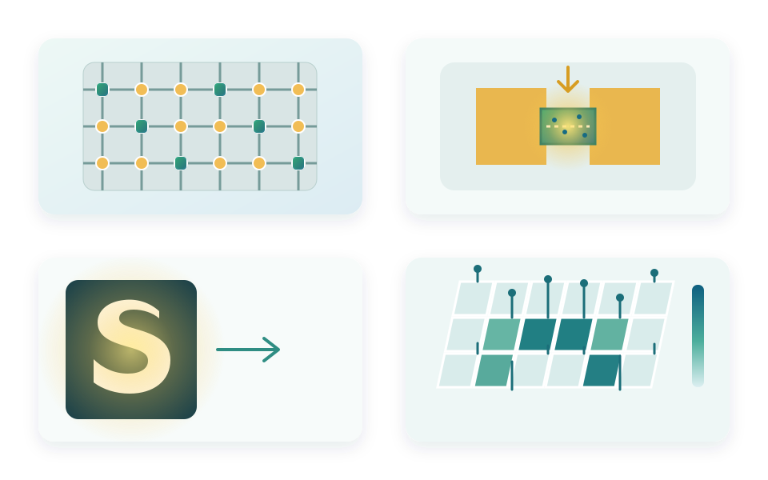
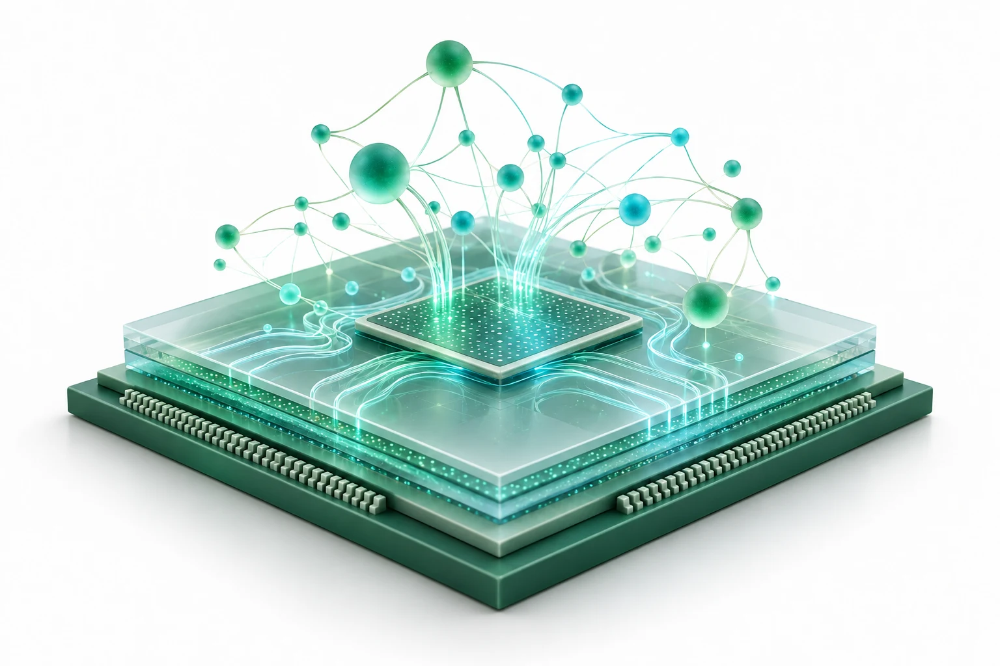

离子调控突触与储备池计算
利用多端电解质栅晶体管中的离子调控，将可调短时动态与长期记忆结合，在同类器件上构建储备层和读出层，用于图像识别与时间序列预测。
K. Liu et al. · Nano Research · 2024 ↗

先进集成电路材料与类脑芯片实验室
Advanced IC Materials & Neuromorphic Chips Laboratory
致力于突破后摩尔时代的算力瓶颈，
聚焦于新型半导体材料、忆阻器器件、以及具有高能效比的
神经形态（类脑）计算架构的研究与应用。
利用多端电解质栅晶体管中的离子调控，将可调短时动态与长期记忆结合，在同类器件上构建储备层和读出层，用于图像识别与时间序列预测。
K. Liu et al. · Nano Research · 2024 ↗
通过聚合物刚性结晶区与柔性链段的结构设计，调控离子迁移路径和导电细丝，实现微小有机突触，探索高密度存储与神经形态计算。
S. Liu et al. · Nature Communications · 2023 ↗
将微米级有机单晶自对准生长在预制电极上，构建高分辨率、可寻址的光电探测器阵列；通过阵列化器件完成光信号的空间读出，为高密度图像感知与集成光电子器件提供新的实现路径。
Z. Fang et al. · Advanced Materials Technologies · 2022 ↗用于功能材料、量子点及器件前驱体系的制备与工艺探索，设备实拍与具体型号可在后续补充。
面向氧化物、金属及半导体功能薄膜的可控制备，为异质结构筑和器件集成提供工艺基础。
围绕材料结构、表面形貌和关键物性开展表征，为材料优化、缺陷分析与界面机制研究提供依据。
用于器件电学、光响应与动态行为测试，支撑光电探测、人工突触及存算器件性能评估。
通过能带工程、缺陷工程和界面电荷调控，实现光生载流子的分离、输运与俘获，并将材料的慢动力学转化为短时/长时可塑性。
围绕材料、器件、集成电路与智能系统推进跨学科研究。
以缺陷工程、界面工程和能带工程为抓手，构建可调控的光电响应与记忆行为。
欢迎具有材料、器件、电路、计算与微纳加工背景的同学和研究人员加入。
欢迎学术交流、科研合作以及优秀学生加入课题组。
